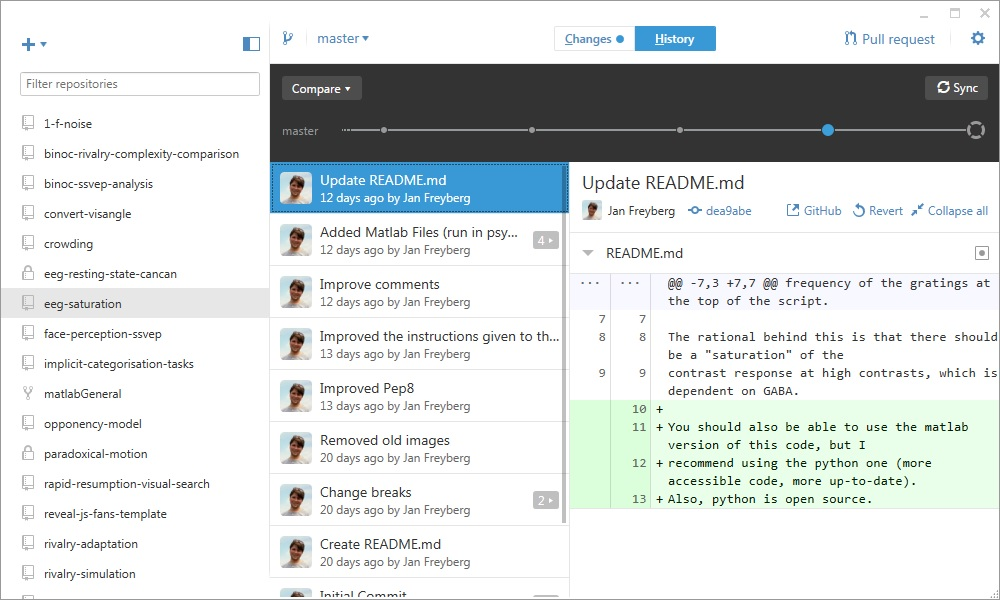

Version Control
Version control is the process of updating your document versions,
while keeping track of older versions.
So, for example:
- thesis.doc
- thesis_1.doc
- thesis_2.doc
- ...
- thesis_final.doc
- thesis_final_for_real.doc
Version Control
Git is a method that allows you to do version control. While it's
designed for coding, you can use it for anything.
Git is also particularly designed for collaborative work, so when
you're working on an analysis script with someone else.
It relies on you "pushing" your code to a server, and others can
"pull" it from there, or push their own changes.
Version Control
Github is a company that aims to make the use of git easier, by
allowing you to look at your code through your web browser, and
allowing you to interact with others.

On your desktop, you can use GitHub to manage your repositories and
commit your changes.

Github and the web
In your browser, you can visit github.com.
Github makes sharing your code, as well as your results, easy - so you can comply with guidelines by journals such as PLOS One and Science
Github integrates very well into existing facilities for managing your projects, such as the Open Science Framework
Github in your workflow
You can also use GitHub as a to-do list manager for your analysis
And, as an academic institution, we get free "premium" institutional benefits.